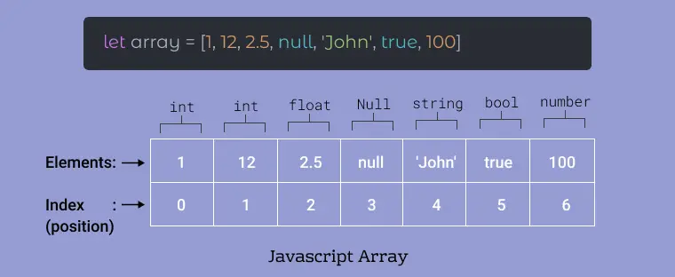
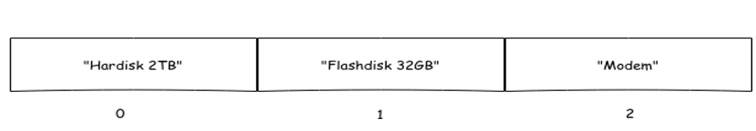
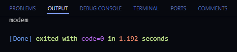
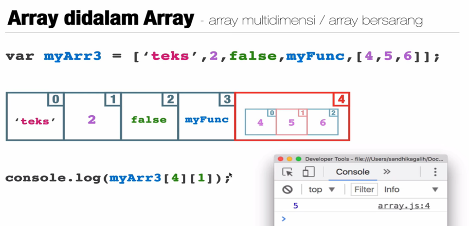
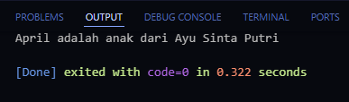

Array

Array adalah Tipe data yang di gunakan untuk mendeskripsikan kumpulan elemen (nilai atau variabel) yang tiap elemen nya memiliki index.
Kenapa Harus menggunakan Array? Bisa saja kita buat seperti ini :
var hari1 = "senin";
var hari2 = "selasa";
var hari3 = "rabu";
Apakah boleh seperti ini? Boleh-boleh saja. Tapi kurang efektif.
Dengan menggunakan lebih mempersingkat sintak yang kita buat, dapat dilihat di bawah ini :
var hari = [ 'senin','selasa','rabu','kamis' ]
var siswa = [ 'budi','ayu','joko' ]
Kelebihan dengan menggunakan array sebagai berikut :
Sifat-sifat dari array
Sintaks Array
Cara 1
var elemen = [ 'hardisk 2TB','flasdisk 32GB','modem' ]
Cara 2
var elemen =[ ]
elemen = [ 'hardisk 2TB','flasdisk 32GB','modem' ]
Contoh sintak array menggunakan indeks yaitu sebagai berikut :
var elemen = [ 'hardisk 2TB','flasdisk 32GB','modem' ]
console.log( elemen [ 2 ] )
Output :

Array Bersarang

Array bersarang/multidimensi merupakan array yang berada di dalam array lain yang menjadi induk dari array tersebut. Bisa juga disebut sebagai Array didalam Array.
Contoh skrip kode yang menerapkan array bersarang yaitu sebagai berikut :
const keluarga = [ 'Budi Sudarsono','Ayu Sinta Putri',['Joko','Dina','April','Alif','Doni'] ];
//Ayah = Budi Sudarsono, Ibu = Ayu Sinta Putri
console.log(keluarga[2][2]+' adalah anak dari '+keluarga[1]);
Output :

Latihan Soal
Buatlah sebuah array dan array bersarang dengan variabel yang bernama kelompok1
di dalam kelompok1 tersebut terdapat ketua, wakil ketua, dan juga 6 anggota kelompok.
Ketua (Adit)
Wakil Ketua (Cynthia)
Anggtoa Kelompok (Dimas, Farhan, Hasna, Jihan, Laura, Naufal)
Output : Dimas akan mengikuti lomba balap karung, sedangkan Hasna akan mengikuti lomba makan kerupuk. Lalu Jihan, Naufal dan Adit akan mengikuti lomba bakiak.
Selamat mengerjakan !!